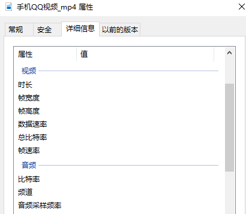
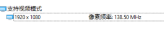
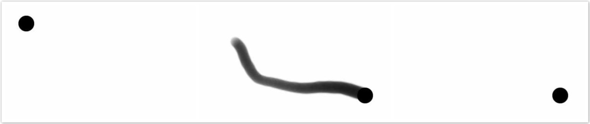
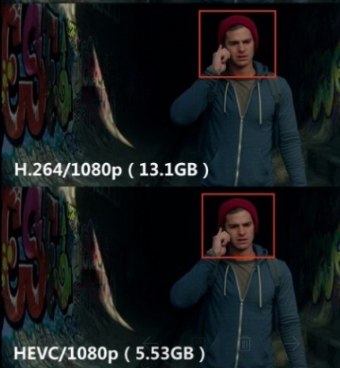
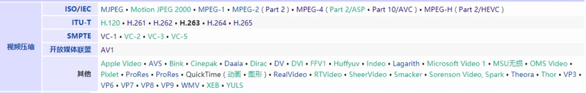
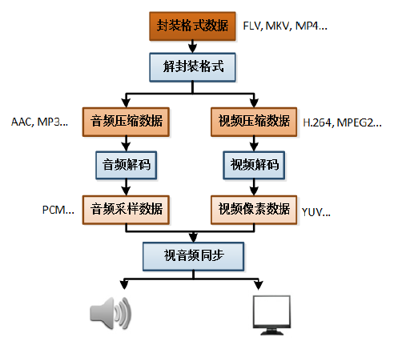

本文将视频相关的理论知识与基础概念划分为 11 个知识点，如下：
视频
分辨率
比特率
采样率
帧率
视频编码
编码标准
视频封装格式
视频解码
视频播放原理
视频与流媒体
1.视频
根据人眼视觉暂留原理，每秒超过 24 帧的图像变化看上去是平滑连续的，这样的连续画面叫视频。
2.分辨率
分辨率是以横向和纵向的像素数量来衡量的，表示平面图像的精细程度。视频精细程度并不只取决于视频分辨率，还取决于屏幕分辨率。
1080P 的 P 指 Progressive scan（逐行扫描），即垂直方向像素点，也就是 “高”，所以 1920X1080 叫 1080P， 不叫 1920P。
当 720P 的视频在 1080P 屏幕上播放时，需要将图像放大，放大操作也叫上采样。
上采样几乎都是采用内插值方法，即在原有图像的像素点之间采用合适的插值算法插入新的元素，所以图像放大也称为图像插值。
简单的记录一下插值算法：
（1）邻插值算法：
将四个像素（放大一倍）用原图一个像素的颜色填充，较简单易实现，早期的时候应用比较普遍，但会产生明显的锯齿边缘和马赛克现象。
（2）双线性插值法：
是对邻插值法的一种改进，先对两水平方向进行一阶线性插值，再在垂直方向上进行一阶线性插值。能有效地弥补邻插值算法的不足，但还存在锯齿现象并会导致一些不期望的细节柔化。
（3）双三次插值法：
是对双线性插值法的改进，它不仅考虑到周围四个直接相邻像素点灰度值的影响，还考虑到它们灰度值变化率的影响，使插值生成的像素灰度值延续原图像灰度变化的连续性，从而使放大图像浓淡变化自然平滑。
除此之外还有很多更复杂效果更优的算法，比如小波插值、分形等等。
当 1080P 的视频在 720P 屏幕上播放时，需要将图像缩小，缩小操作也叫下采样。
下采样的定义为：对于一个样值序列，间隔几个样值取样一次，得到新序列。
对于一幅分辨率为 MN 的图像，对其进行 s 倍下采样，即得到 (M/s)(N/s) 分辨率的图像（s 应为 M、N 的公约数），就是把原始图像 s*s 窗口内的图像变成一个像素，这个像素点的值就是窗口内所有像素的均值。
最佳体验为屏幕与视频分辨率相同且全屏播放，视频分辨率过高的话屏幕没有能力去呈现，视频分辨率过低的话无法发挥屏幕的能力。
3.比特率
比特率即码率，在不同领域有不同的含义，在多媒体领域，指单位时间播放音频或视频的比特数，可以理解成吞吐量或带宽。
单位为 bps , 即 bits per second，每秒传输的数据量，常用单位有：kbps、mbps 等。
计算公式：码率（kbps）= 文件大小（kb）/ 时长（s）
通俗一点理解就是取样率，取样率越大，精度就越高，图像质量越好，但数据量也越大，所以要找到一个平衡点：用最低的比特率达到最少的失真。
在一个视频中，不同时段画面的复杂程度是不同的，比如高速变化的场景和几乎静止的场景，所需的数据量也是不同的，若都使用同一种比特率是不太合理的，所以引入了动态比特率。
（1）动态比特率
简称为 VBR，即 Variable Bit Rate，比特率可以随着图像复杂程度的不同而随之变化。
图像内容简单的片段采用较小的码率，图像内容复杂的片段采用较大的码率，这样既保证了播放质量，又兼顾了数据量的限制。
比如 RMVB 视频文件，其中的 VB 就是指 VBR，表示采用动态比特率编码方式，达到播放质量与体积兼得的效果。
（2）静态比特率
简称为 CBR，即 Constant Bit Rate，比特率恒定。
图像内容复杂的片段质量不稳定，图像内容简单的片段质量较好。
上面列出的计算公式显然是针对 CBR ，除 VBR 和 CBR 外，还有 CVBR（Constrained VariableBit Rate） 、ABR (Average Bit Rate) 等等。
4.采样率
定义：每秒从连续信号中提取并组成离散信号的采样个数，单位为赫兹（Hz）。
对于取样率、采样率和抽样率，没必要纠结它们的区别，都是同义词。
（1）音频中的采样率
指把音频信号数字化后 1 个通道 1 秒钟采取多少个样本，如 44.1kHz 的采样率，就是指 1 个通道 1 秒钟有 44.1k 个数据。
（2）视频中的采样率
视频一般不标识采样率属性，比如：

采样率本身就是一个可泛化的概念，对于视频来说，若非要用采样率来描述的话，那就要分为两个层面：帧频和场频。
从帧频层面来说，采样率就是指帧率，指 1 秒钟显示多少帧图像。
从场频层面来说，采样率就是指像素频率，指 1 秒钟显示多少个像素。
像素频率是显示器的一个指标，可以理解成显示器的最大带宽，可以起到限制分辨率和刷新率的作用，根据含义可得出一个公式：
像素频率 = 帧率 X 帧像素数量
对于：

帧率 = 138.5 x 1024 x 1024 / 1920 / 1080 ≈ 70.04 ， 得出的 70Hz 为正常的帧率范围，也可以反向确定对像素频率的理解是正确的。
5.帧率
定义：用于测量显示帧数的量度。单位为 FPS（Frames per Second，每秒显示帧数）或赫兹（Hz）。
帧率越高，画面越流畅、逼真，对显卡的处理能力要求越高，数据量越大。
1 中提到每秒超过 24 帧的图像变化看上去是平滑连续的，这是针对电影等视频而言，对游戏来说 24 帧是不流畅的。
为什么 24fps 的电影感觉流畅，而 24fps 的游戏就感觉很卡呢？
第一个原因：两者图像生成原理不同
电影的一帧在一段时间曝光，每一帧都包含一段时间的信息，而游戏的画面则是由显卡计算生成的，一帧只包含那一瞬间的信息。
比如一个圆从左上角移动到右下角：

前者为电影的一帧，后者为游戏的一帧，可以看到在电影中动作会出现拖影，给人以动感的效果，连贯而不卡。
第二个原因：电影的FPS是稳定的，而游戏则是不稳定的
电影若为 24fps，那就表示每隔 1/24 秒刷新一次画面，帧间隔是固定的。
游戏若为 60fps，表示大约每隔 1/60 秒刷新一次画面，帧间隔是不稳定的，即使 1 秒能显示 60 帧，那也可能是前半秒显示了 59 帧，后半秒显示了 1 帧。
6.视频编码
定义：通过特定的压缩技术，将某个视频格式的文件转换成另一种视频格式。
视频数据在时域和空域层面都有极强的相关性，这也表示有大量的时域冗余信息和空域冗余信息，压缩技术就是去掉数据中的冗余信息。
（1）去除时域冗余信息
运动补偿：通过先前的局部图像来预测、补偿当前的局部图像，可有效减少帧序列冗余信息。
运动表示：不同区域的图像使用不同的运动矢量来描述运动信息，运动矢量通过熵编码进行压缩（熵编码在编码过程中不会丢失信息）。
运动估计：从视频序列中抽取运动信息。
通用的压缩标准使用基于块的运动估计和运动补偿。
（2）去除空域冗余信息
变换编码：将空域信号变换到另一正交矢量空间，使其相关性下降，数据冗余度减小。
量化编码：对变换编码产生的变换系数进行量化，控制编码器的输出位率。
熵编码： 对变换、量化后得到的系数和运动信息，进行进一步的无损压缩。
视频压缩编码技术可分为两大类：无损压缩和有损压缩。
（1）无损压缩
无损压缩也称为可逆编码，重构后的数据与原数据完全相同，适用于磁盘文件的压缩等。
主要采用熵编码方式，包括香农编码、哈夫曼编码和算术编码等。
<1>香农编码
香农编码采用信源符号的累计概率分布函数来分配码字，效率不高，实用性不大，但对其他编码方法有很好的理论指导意义。
<2>哈夫曼编码
哈夫曼编码完全依据出现概率来构造异字头的平均长度最短的码字。
基本方法为：先对图像数据扫描一遍，计算出各种像素出现的概率，按概率的大小指定不同长度的唯一码字，由此得到一张该图像的霍夫曼码表。
编码后的图像数据记录的是每个像素的码字，而码字与实际像素值的对应关系记录在码表中。
<3>算术编码
算术编码是用符号的概率和编码间隔两个基本参数来描述的，在给定符号集和符号概率的情况下，算术编码可以给出接近最优的编码结果。
使用算术编码的压缩算法通常先要对输入符号的概率进行估计，然后再编码，估计越准，编码结果就越接近最优的结果。
（2）有损压缩
有损压缩也称为不可逆编码，重构后的数据与原数据有差异，适用于任何允许有失真的场景，例如视频会议、可视电话、视频广播、视频监控等。
编码方式包括预测编码、变换编码、量化编码、混合编码等。
7.编码标准
定义：为保证编码的正确性，编码要规范化、标准化，所以就有了编码标准。
研制视频编码标准的有两大正式组织：ISO/IEC（国际标准化组织）、ITU-T（国际电信联盟通信标准部）。
ISO/IEC 制定的编码标准有：MPEG-1、MPEG-2、MPEG-4、MPEG-7、MPEG-21 和 MPEG-H 等。
ITU-T 制定的编码标准有：H.261、H.262、H.263、H.264 和 H.265 等。
MPEG-x 和 H.26x 标准的视频编码都是采用有损压缩的混合编码方式，主要区别在于处理图像的分辨率、预测精度、搜索范围、量化步长等参数的不同，所以其应用场合也不同。
MPEG-x 系列：
（1）MPEG-1
MPEG-1 共 5 部分。
第 2 部分视频编码方案，规定了逐行扫描视频的编码方案。
第 3 部分音频编码方案，将音频流的压缩分为 3 层并依次增大压缩比，广为流传的 MP3（MPEG-1 Layer 3）就是按照此部分编码方案压缩之后的文件格式。
（2）MPEG-2
MPEG-2 共 11 个部分，在 MPEG-1 的基础上提高了码率和质量。
第 2 部分视频编码方案，规定了隔行扫描视频的编码方案，是和 ITU-T 共同开发的，ITU-T 称其为 H.262。
第 3 部分音频编码方案，延续了 MPEG-1 的 3 层压缩方案，压缩后文件格式仍未 MP3，但在压缩算法上有所改进。
第 7 部分首次提出 AAC（MPEG Advanced Audio Coding）编码，目的以更小的容量和更好的音质取代 MP3 格式。
（3）MPEG-4
MPEG-4 共 27 个部分，更加注重多媒体系统的交互性和灵活性。
第 3 部分音频编码方案，优化了 AAC 编码算法，并在推出后逐渐取代 MP3，比如和视频封装在一起的音频优先考虑 AAC 格式，但就民用而言大部分还是使用 MP3 格式。
第 10 部分提出 AVC（Advanced Video Coding）编码，是和 ITU-T 共同开发的，ITU-T 称其为 H.264。
第 14 部分提出了 MP4 格式封装，官方文件后缀名是 “.mp4”，还有其他的以 mp4 为基础进行的扩展或缩水版本的格式，包括：M4V, 3GP, F4V 等。
（4）MPEG-7
MPEG-7 不同于 MPEG-1、MPEG-2、MPEG-4，它不是音视频压缩标准。
MPEG-7 被称为 “多媒体内容描述接口”，目的就是产生一种描述多媒体信息的标准，并将该描述与所描述的内容相联系，以实现快速有效的检索。
（5）MPEG-12
MPEG-12 其实就是一些关键技术的集成，通过这种集成环境对全球数字媒体资源进行管理，实现内容描述、创建、发布、使用、识别、收费管理、版权保护等功能。
（6）MPEG-H
MPEG-H 包含了 1 个数字容器标准、1 个视频压缩标准、1 个音频压缩标准和 2 个一致性测试标准。
其中视频压缩标准为高效率视频编码（HEVC），和 ITU-T 联合开发，相比 H.264/MPEG-4 AVC 数据压缩率增加了 1 倍。
H.26x 系列：
（1）H.261
H.261 是第一个实用的数字视频编码标准，使用了混合编码框架，包括了基于运动补偿的帧间预测，基于离散余弦变换的空域变换编码，量化，zig-zag 扫描和熵编码。
H.261 的设计相当成功，之后的视频编码国际标准基本上都是基于 H.261 的设计框架，包括 MPEG-1，MPEG-2／H.262，H.263，甚至 H.264。
（2）H.262
H.262 由 MPEG-1 扩充而来，支持隔行扫描，在技术内容上和 MPEG-2 视频标准一致，DVD 就是采用了该技术。
（3）H.263
H.263 是一种用于视频会议的低码率视频编码标准，在 H.261 基础上发展而来。
与 H.261 相比采用了半象素的运动补偿，并增加了 4 种有效的压缩编码模式，在低码率下能够提供比 H.261 更好的图像效果。
H.263 于 1995 年推出第一版，后续在 1998 年和 2000 年还推出了第二版 H.263+、第三版 H.263++ 。
（4）H.264
H.264 又称为 MPEG-4 第 10 部分，即 MPEG-4 AVC，它是一种面向块，基于运动补偿的视频编码标准。
于 2003 年正式发布，现在已经成为高精度视频录制、压缩和发布的最常用格式之一。
H.264 可以在低码率情况下提供高质量的视频图像，相比 H.263 可节省 50% 的码率。
相比 H.263，H.264 不需设置较多的编码选项，降低了编码的复杂度。
H.264 可以根据不同的环境使用不同的传输和播放速率，并且提供了丰富的错误处理工具，可以很好的控制或消除丢包和误码。
H.264 性能的改进是以增加复杂性为代价而获得的，H.264 编码的计算复杂度大约相当于 H.263 的 3 倍，解码复杂度大约相当于 H.263 的 2 倍。
H.264 协议中定义了三种帧，分别为 I 帧、P 帧以及 B 帧。
<1>I 帧
I帧即帧内编码帧、关键帧，可以理解为一帧画面的完整保留，解码时只需要本帧数据就可以完成，不需要参考其他画面，数据量比较大。
<2>P 帧
P帧即前向预测编码帧，记录当前帧跟上一关键帧（或P帧）的差别，解码时依赖之前缓存的画面，叠加上本帧定义的差别，才能生成最终画面，数据量较 I 帧小很多。
<3>B 帧
B帧即双向预测编码帧，记录当前帧跟前后帧的差别，解码时依赖前面的I帧（或P帧）和后面的P帧，数据量比I帧和P帧小很多。
数据压缩比大约为： I帧：P帧：B帧 = 7：20：50，可见 P 帧和 B 帧极大的节省了数据量，节省出来的空间可以用来多保存一些 I 帧，以实现在相同码率下，提供更好的画质。
（5）H.265
H.265 即高效视频编码（High Efficiency Video Coding ，简称 HEVC），于 2013 年正式推出。
H.265 编码架构和 H.264 相似，主要也包含，帧内预测、帧间预测、转换、量化、去区块滤波器、熵编码等模块。
H.265 编码架构整体被分为编码单位、预测单位和转换单位。
H.265 在 H.264 的基础之上，使用先进的技术用以改善码流、编码质量、延时和算法复杂度之间的关系，达到最优化设置。
在码率减少 51-74% 的情况下，H.265 编码视频的质量还能与 H.264 编码视频近似甚至更好。
H.265 可以在有限带宽下传输更高质量的网络视频，智能手机、平板机等移动设备将能直接在线播放 1080p 的全高清视频，让网络视频跟上了显示屏 “高分辨率化” 的脚步。
来张图感受一下吧：

除 MPEG-x 和 H.26x 系列标准外，还有其他的编码标准，如谷歌的 VP 系列，对视频编码标准归纳一下，如图：

8.视频封装格式
视频封装格式如 mp4、mkv，用来存储或传输编码数据，可以理解成一个容器。
封装就是按照一定规则把音视频、字幕等数据组织起来，包含编码类型等公共信息，播放器可以按照这些信息来匹配解码器、同步音视频。
不同的封装格式支持的视音频编码格式是不一样的，比如 MKV 格式支持比较多，RMVB 则主要支持 Real 公司的视音频编码格式。
这里列出了常见的视频封装格式，可以查看各封装格式支持的音视频编码格式等信息。
9.视频解码
定义：将视频压缩编码过的数据，解压缩成为视频原始数据，即视频编码的反过程。
对于一个播放器来说，很重要的一个指标就是能支持多少种视频解码。
10.视频播放原理
播放一个本地视频文件，需要经过解封装，解码音视频，音视频同步等步骤。

解封装：就是将输入的封装格式的数据，分离成为音频压缩编码数据和视频压缩编码数据。例如，FLV 格式的数据，经过解封装操作后，输出 H.264 编码的视频码流和 AAC 编码的音频码流。
解码：将视频/音频压缩编码数据，解码成为非压缩的视频/音频原始数据。音频的压缩编码标准包含 AAC，MP3，AC-3 等等，视频的压缩编码标准则包含 H.264，MPEG2，VC-1 等等。解码是整个系统中最重要也是最复杂的一个环节。通过解码，压缩编码的视频数据输出成为非压缩的颜色数据，例如 YUV420P，RGB 等等；压缩编码的音频数据输出成为非压缩的音频抽样数据，例如 PCM 数据。
视音频同步：根据解封装模块处理过程中获取到的参数信息，同步解码出来的视频和音频数据，并将视频音频数据送至系统的显卡和声卡播放出来。
11.视频与流媒体
上面播放原理中分析的是本地视频文件，如果播放的是互联网上的视频，步骤则为：解协议，解封装，解码音视频，音视频同步，多了一个解协议的步骤。
解协议：将流媒体协议的数据，解析为标准的相应的封装格式数据。
视音频在网络上传播的时候，常常采用各种流媒体协议，例如 HTTP，RTMP， MMS 等等。这些协议在传输视音频数据的同时，也会传输一些信令数据。
这些信令数据包括对播放的控制（播放，暂停，停止），或者对网络状态的描述等。
解协议的过程中会去除掉信令数据而只保留视音频数据。例如，采用 RTMP 协议传输的数据，经过解协议操作后，输出 FLV 格式的数据。